Case 022021 to 2023Devsisters
CookieRun VRA 15cm hero in a castle built for people
At Devsisters, a mobile game company that had never made a VR game, I started a CookieRun VR game on my own. The plan I wrote turns on one idea: you are a cookie 15cm tall, loose in a witch's castle built to human scale, and every system follows from being that small. I pitched it inside the company and to Meta, won ₩2.5B of internal investment, had a working prototype in six months, and built a 25-person team. It launched on Meta Quest as CookieRun: The Darkest Night on 30 November 2023.
- Role
- Project director: the first plan and the pitch, the team, and the partnership with Meta
- Period
- From 2021. Chapter 1 launched on 30 November 2023
- Platform
- Meta Quest 2, Quest 3 and Quest Pro
- Team
- Grew to 25 across product, engineering, art and marketing
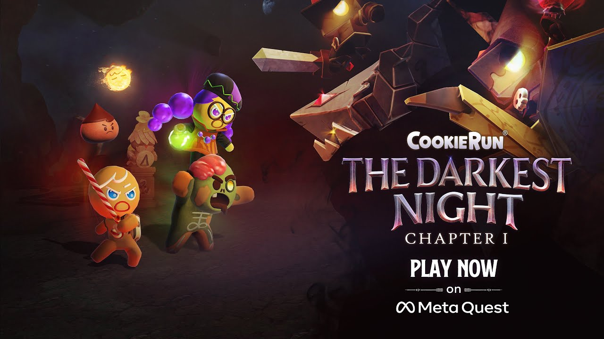
Play the launch trailerThe Chapter 1 launch trailer, from Meta Quest's official YouTube channel.
About the project
CookieRun is Devsisters' family of mobile games, best known as a runner in which GingerBrave escapes a witch's oven. The company had made games for phones since 2009 and had never made one for VR. I did not want a runner on a headset. I wanted a game that could only exist in VR.
So the plan starts from scale. In a headset you stand in a world at your own size; here that world is a witch's castle built for people, and you are 15cm tall. Climbing is a control of its own, a book is pulled down by its bookmark, and the witch's black cat is a monster. From that one idea came the rest: friends who fight beside you because you are small, a safe home between levels, and moments that pull the camera out so you can see how small you are.
- What I did
- Wrote the first plan and the pitch, set the direction, built the team, and negotiated the partnership with Meta
- What the team did
- The detailed game design, story, art, engineering and builds, with Devsisters' shared teams for IP, server, QA and marketing
- The pitch
- A 52-page deck for Meta in 2022, with videos of the working prototype
- What shipped
- CookieRun: The Darkest Night, Chapter 1, on Meta Quest, made by FreshDoh!, a Devsisters studio
- The player problem I set out to solve
- CookieRun players knew these characters from a phone screen, running from left to right. Putting that runner on a headset would have wasted the medium. The game needed a reason to be in VR that a fan would feel in the first minute.
- Why it mattered
- The deck set its own comparison on Quest: Moss, Vader Immortal, Star Wars: Tales from the Galaxy's Edge and Resident Evil 4. A mobile company's first VR game had to stand next to them on an idea a fan would feel at once, not on the size of its production.
- How I went about it, and what I chose
- I made the player small and designed outward from it: companions and pets because a cookie cannot win alone, a shelter to come home to between levels, movement and turning that each player sets for comfort, and camera changes that show the characters off. We proved the play in grey-box prototypes before any final art.
- Results and what I learned
- ₩2.5B of internal investment, a working prototype in six months, a 25-person team and the company's first partnership with Meta. Chapter 1 shipped with the plan's core: a small GingerBrave with a candy cane, the witch's castle, cookie companions, gnomes and jelly bears, and pets.
built for people
working prototype
through to launch
You are 15cm tall, in a castle built for people.
You are born in the middle of the witch's oven as GingerBrave. A little witch has broken her kind's ban on baking living cookies, and to keep them from running away she has put a spell on the castle that slowly drains their bravery. One cookie she made a guard, and he calls himself the Pride.
Your goal is to find the other cookies, rescue them, and escape the castle together. The story answers questions CookieRun fans had never been told: why the cookies in the castle want to escape, how they got out, and who tried to stop them.
The Brave and the Pride were both born as GingerBrave. Both want the other cookies safe. One means to keep things as they are, the other to change everything.
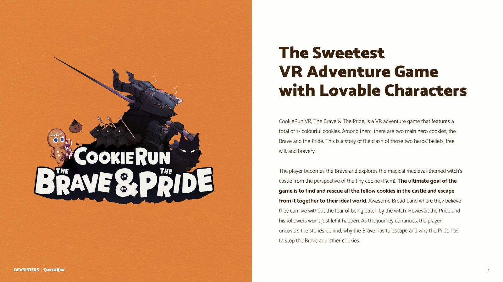
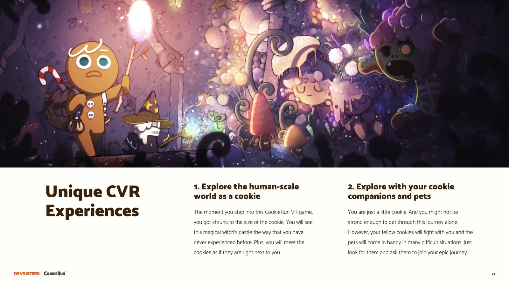
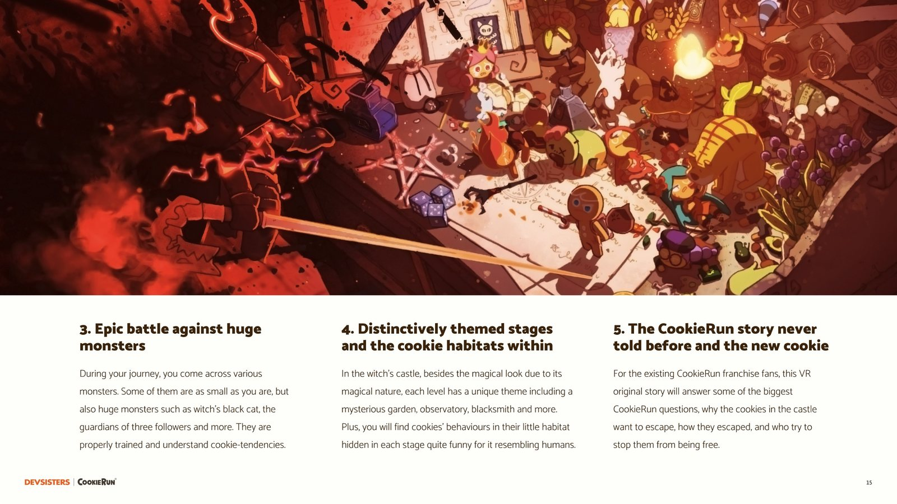
A runner on a phone does not make a game in a headset.
CookieRun's players knew GingerBrave as a runner, seen from the side on a phone. The franchise's player data in the deck showed who they were: 47.6% were 13 to 20 years old and 33.5% were 21 to 30, with women and men in near-equal numbers.
A VR game for them had to make sense in the first minute, be comfortable for someone new to VR, and give a fan something they could not get on a phone. Copying the runner would have done none of that.
The company had made games for phones since 2009 and never one for VR, so there was no team, pipeline or partner to start from.
The age rating the plan set, for players of whom nearly half were 13 to 20.
The deck's own bar on Quest: Moss, Vader Immortal, Star Wars: Tales from the Galaxy's Edge and Resident Evil 4.
Without a reason to be in VR, a fan had no reason to put on a headset.
VR had to be the point
If the game played as well on a phone, a fan had no reason to buy it for a headset. Being small had to be felt with the body: looking up at furniture the size of buildings, climbing it, meeting cookies at your own height.
Many players would be new to VR
A fan base this young would include people putting on a headset for the first time. The game had to let each of them choose how to move and turn, without a separate, easier game.
A first bet for a mobile company
Investment inside a company that has never made VR is won with something people can play, not with slides. The plan had to reach a working prototype quickly.
So every system had to follow from being small, work for someone new to VR, and be playable before it was pretty.
I made the player small, then designed everything outward from it.
Make the player small
You are 15cm tall in a castle built for people. The castle is 15 places, from the kitchen where every cookie is born to the observatory, the ancient garden, the blacksmith's workshop and the final gate, each with cookies waiting to be found.
You cannot win alone
A cookie that small is weak. The cookies you rescue join you and fight beside you, and pets locked in the witch's terrariums each bring an ability: Choco Drop body-slams enemies, Iron Beetle raises your defence, Blue Wisp pushes harmful creatures away.
A home between levels
In the lobby the Prophet Cookie points you to the next level. After it you go to the Gnome's shelter, where the cookies you rescued stay and you upgrade your weapons and pets, then back to the lobby. Every rescue stays visible.
Comfort is the player's choice
Both continuous movement and teleport, both smooth and snap turning. One stick moves you; on the other, forward teleports and climbs, left and right snap-turn, and pulling back then letting go charges a dash.
Pull the camera out to show the world
At set moments the view moves from first person to third and back, so you see how small you are and the characters at their most charming. Pull a book's bookmark and the book sticks halfway down, then turns into a mini-game; a dandelion floats you back up after a fall.
A level, drawn as how much your companion does
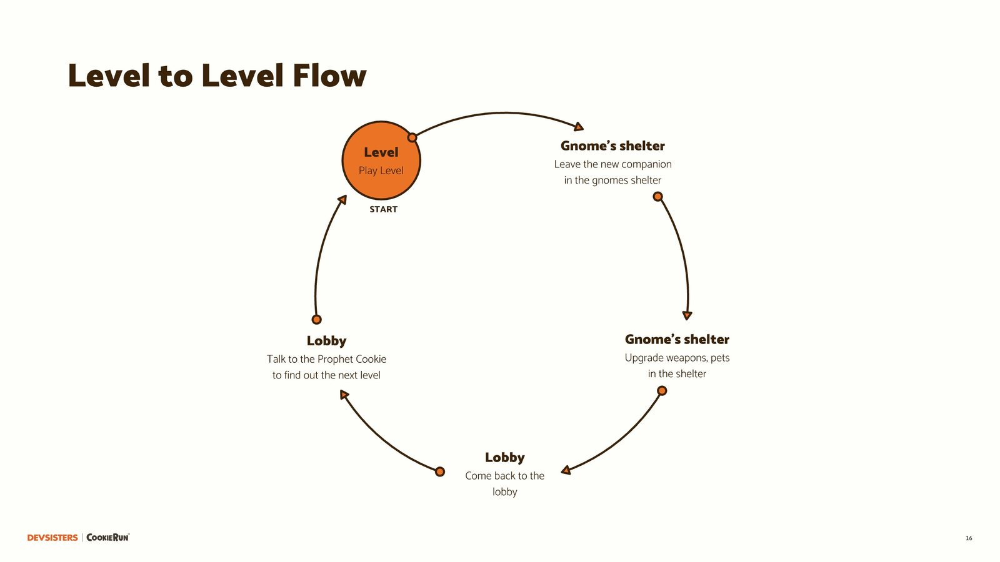
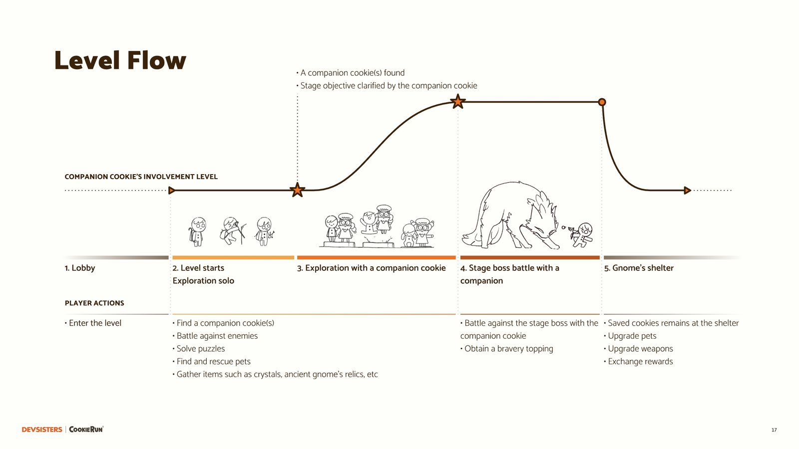
Characters built for the scale
The enemies are things that are huge to a cookie. The witch's black cat was there before the witches moved in, and hunts small things the way cats do.
The Pride's three followers are cookies the witch threw away as failures, charred, undercooked and lumpy, whom the Pride saved from the bin. Each is paired with an animal, a crow, a snake and a toad, and each guards a part of the castle: the observatory, the ancient garden and the witch's room.
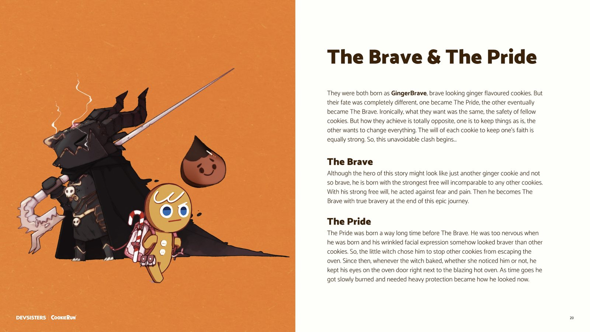
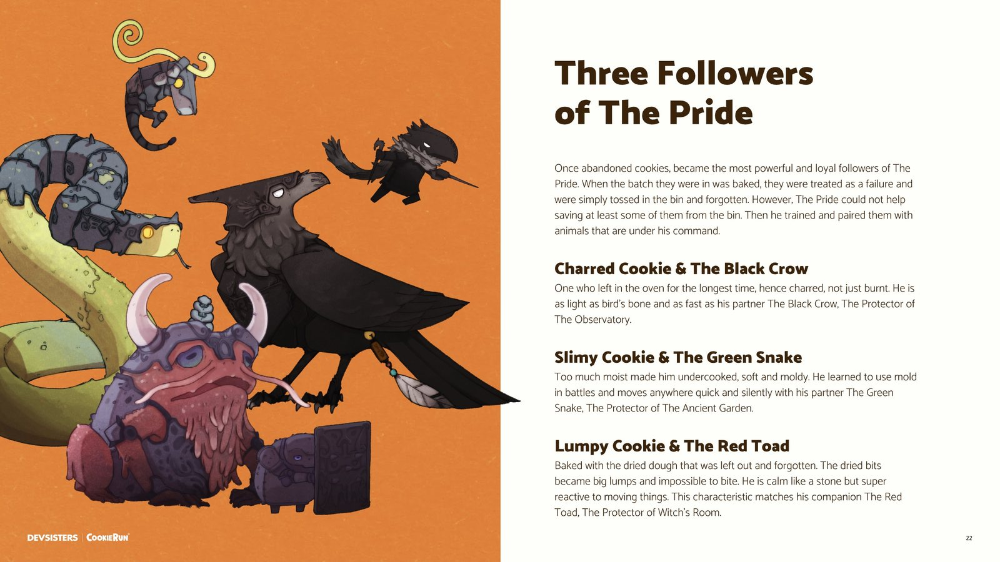
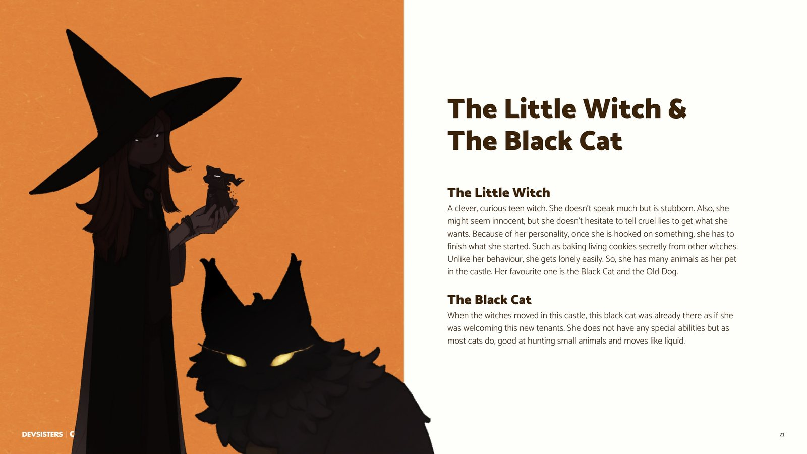
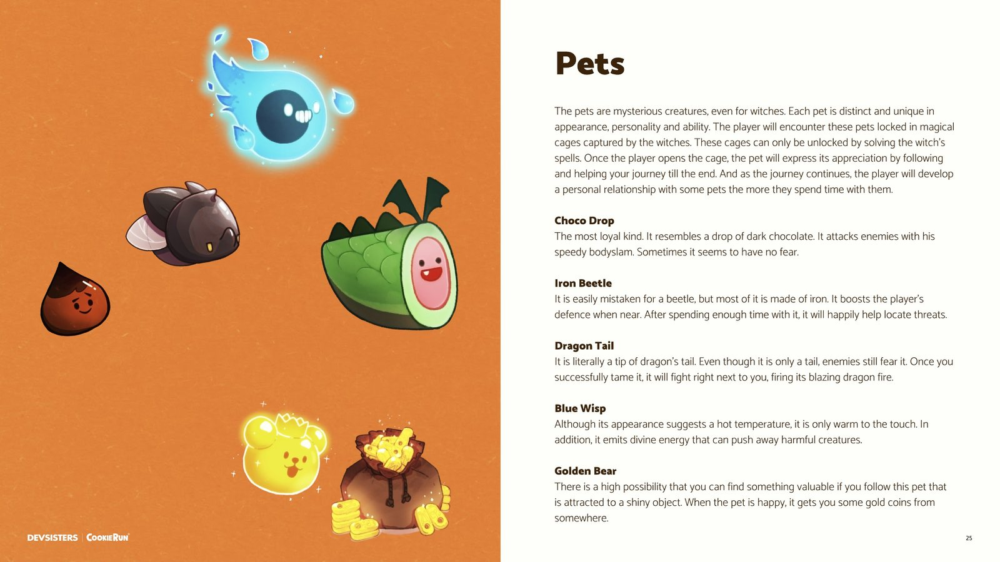
The castle as a map
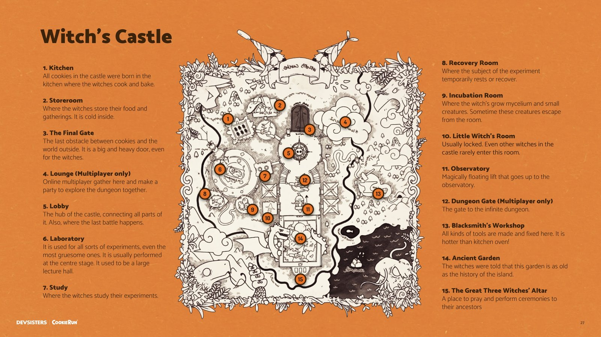
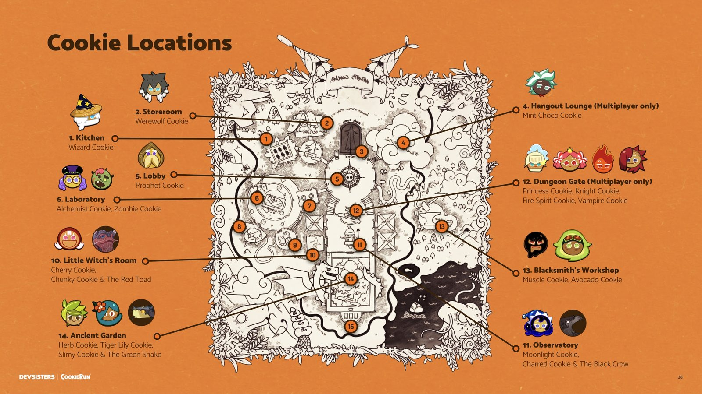
Prove the play before the art
The prototype was built to show how the game plays, not how it looks, so it is grey boxes. In it you meet the Alchemist Cookie, high-five her and she joins your party, then she shows you the next destination through a telescope.
You repair a gnome's taxi stop by hitting shards in the order the gnome lights them, like a rhythm game. You fight with a candy cane, light and medium attacks, a block made by holding it level and a dash, and with a slingshot; you can bat a flying enemy's shots back with the cane. You solve a jigsaw, a safe dial and a lock and key.
Pages from the 2022 deck with stills from the prototype videos. The deck also carried a walkthrough of one level and the November 2022 build.
Funded, built and shipped, with the plan's core intact.
What I planned, and what Chapter 1 shipped
| The 2022 plan | Chapter 1, 2023 | |
|---|---|---|
| The hero | GingerBrave, 15cm tall | GingerBrave with a candy cane, from a small cookie's height |
| Companions | 17 cookies in the story | 7, among them Alchemist, Wizard and Zombie Cookie |
| Helpers | Gnomes, and jelly bears driving the taxis | Gnomes and jelly bears who help you escape |
| Pets | 5, freed from the witch's terrariums | 3 pet companions |
| Places | 15, among them a laboratory and a blacksmith's workshop | 11 themed spaces, among them a laboratory and a forge |
| Release | In three parts | Episodic, in three chapters |
What shipped is taken from Devsisters' press release and UploadVR's coverage of the Chapter 1 launch.
What it took
Internal investment, won for a kind of game the company had never made.
From the start to a working prototype.
The company's first platform partnership, which I negotiated.
Sales and ratings belong to Devsisters, so they are not here.
Five lessons from taking a phone game into VR
-
01
Start from what only the medium can do
Being small is something you feel only in a headset. Once that was the premise, the companions, the shelter, the bosses and the camera all had a reason to exist.
-
02
Let the weakness build the friendships
A cookie 15cm tall cannot win alone, so rescuing other cookies is not a side quest: it is how you get stronger. That gave the characters fans already loved a job in the game.
-
03
Comfort is a setting, not a compromise
People new to VR need teleport and snap turns, and people used to it want to move freely. Offering both kept one game for both, instead of designing down to either.
-
04
Prove the play in grey boxes
The prototype showed how the game plays, not how it looks. People could judge the game by playing it, not by looking at slides.
-
05
A plan is a direction, not the final game
On the way to launch the numbers and the places changed. The core held: the hero's size, the castle, the companions, the gnomes and the pets. A plan's job is to make that core clear enough to survive.